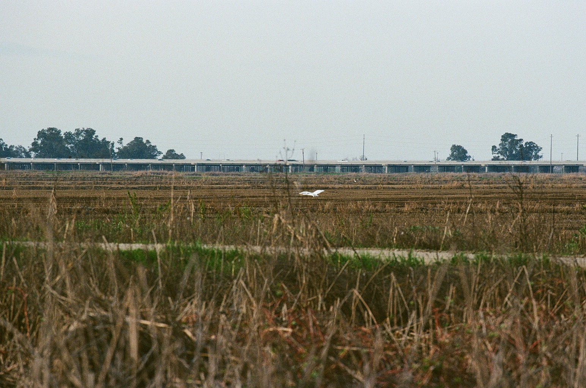

systems
flood.
flight.
food.
Three things happen in the Yolo Basin every year: it floods, birds show up, and rice gets grown. They depend on each other more than you might expect. This page traces that connection through real data from the basin.

eight years of data
2018 to 2025, Yolo County and Yolo Basin sources only. Each line shows one system, scaled so you can see them move together. Toggle any dataset on or off. Hover a year to see the raw numbers. 2025 rice and bird figures are estimates pending the official crop report.
show / hide
Look at 2022. A drought year hit Yolo County hard: rice acreage dropped to just 9,507 acres, the lowest in this dataset, because farmers couldn't get enough water to plant. The Fremont Weir did not overtop. Bird activity dropped too. Then 2023 reversed everything — rice hit 29,974 acres, the weir overtopped for 73 days, and checklists climbed with it. 2024 was dry again (no overtopping), but rice held at a healthy 27,394 acres. In late 2025 the weir finally overtopped again — 20 days — marking the first activation of the new Big Notch fish passage gates.
what happens each month
Hover or click any month to read what the flood, the birds, and the rice are doing. The three rings show how active each system is. The more vibrant the ring, the more things are happening.
hover any month for detail
who shows up
Ten of the most commonly seen birds at the Yolo Bypass Wildlife Area, based on eBird records from Hotspot L443535. Filter by season. Each card explains why that bird is there and how it connects to the water or the rice.
Bird data: eBird / Cornell Lab of Ornithology, Hotspot L443535 (Vic Fazio Yolo Wildlife Area). Peak counts from Napa Solano Audubon Society and Yolo Bird Alliance field records. Bird call recordings from xeno-canto.org, Creative Commons licensed. Each recording is credited to its recordist.
rice in yolo county
Eight years of rice data from the Yolo County Agricultural Commissioner's Crop Report. 2025 figures are preliminary estimates. After each harvest, the same fields get flooded on purpose. That water is what the birds come for all winter. Select a year to see what happened.
→ tap any year card to explore
After harvest, rice fields in the bypass are flooded from October through March. Farmers receive payments through state and federal wetland programs to keep the fields wet. The leftover grain feeds waterfowl. The flooded stalks decompose into the invertebrates that shorebirds eat. In a wet year, that managed flooding layers on top of the natural Fremont Weir floods, and the basin becomes one of the most productive bird stopovers on the West Coast.
Source: Yolo County Department of Agriculture, Weights & Measures — Annual Crop & Livestock Reports 2018–2024. 2025 rice figures are preliminary estimates. Yolo County data only. yolocounty.gov/ag
how it connects
The river goes over the weir
When the Sacramento River runs high enough, it spills over the Fremont Weir — a 1.8-mile structure on the north end of the bypass. That is when the basin floods. Habitat managers look for at least 14 days of strong flow to support wildlife.
Birds find the water
Flooded fields mean food. Shallow water exposes the insects and seeds that shorebirds and waterfowl depend on. The winter visitors — cranes, pintails, dunlin — are here because the fields are wet. That is the whole reason.
The rice fields stay wet after harvest
Farmers flood their harvested fields each fall — partly straw management, partly because programs pay them to keep fields wet for wildlife. The leftover grain feeds ducks and geese. The decomposing stalks feed the bugs that shorebirds need. In a wet year, managed flooding and natural bypass flooding stack on top of each other.
In 2022, farmers planted 59% less rice because the water simply was not there. The Fremont Weir did not overtop at all. Fewer flooded fields meant less habitat, and bird numbers at the wildlife area reflected that. When the rains came back in 2023, the rice came back. And so did the birds.